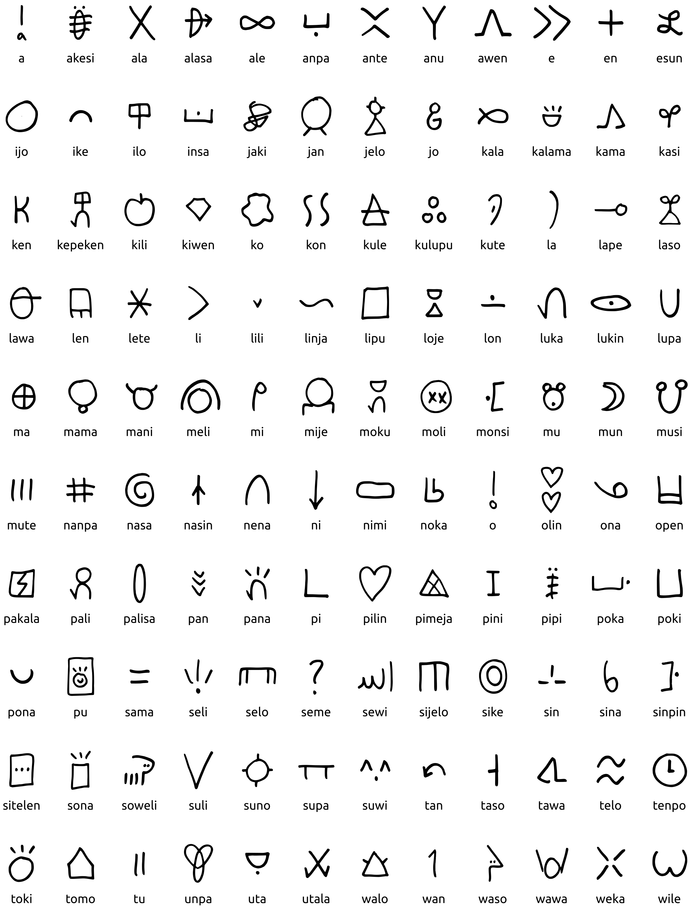
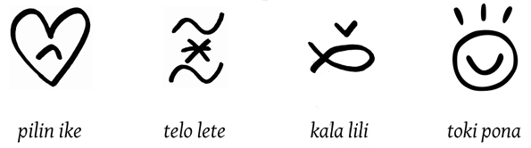
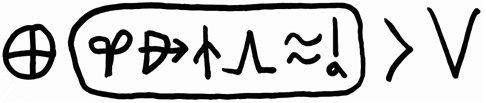

sitelen pona
by Sonja Lang, the creator of toki pona
Combined Glyphs
A single adjective can be written inside or above the word it modifies.
Proper Names
Proper names are written inside a cartouche. Inside this oval shape, each glyph only represents the first letter of its word.
When writing these proper names, you may creatively choose whichever glyphs you feel are appropriate. For example, to write the letter w in your name, you might use waso if you like birds, or wawa if you value strength.
This sentence shows one way to write Canada:
ma Kanata li suli
Canada is large.